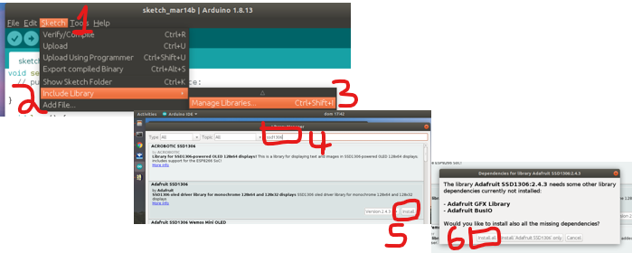
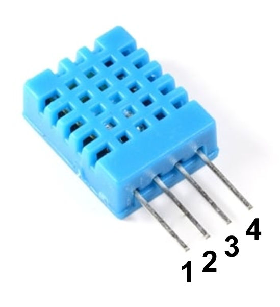
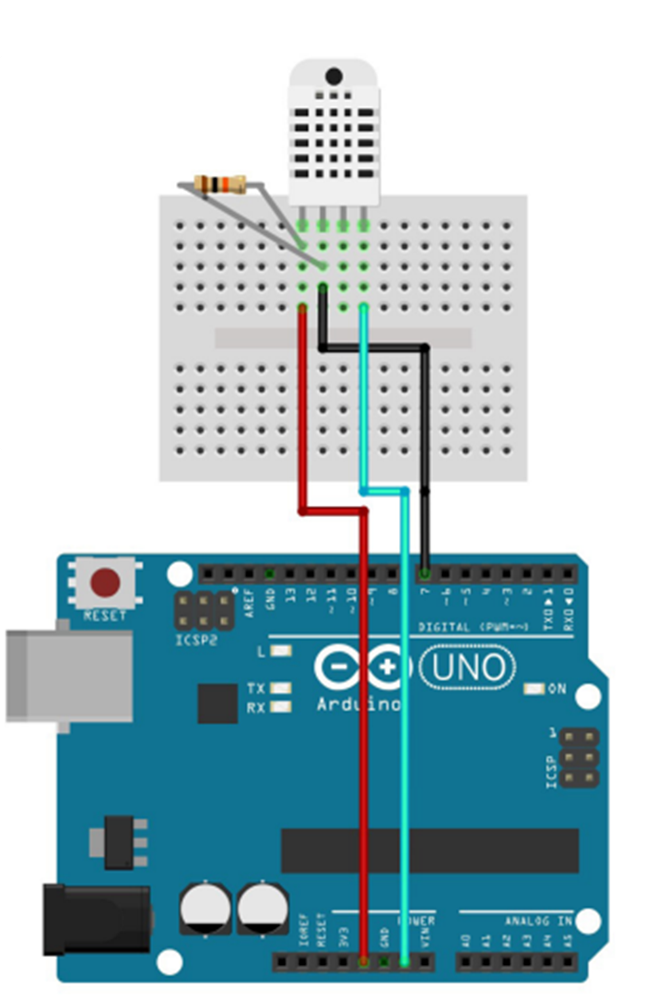

Lab06
O que esse vamos ver neste lab?¶
-
Instalação e uso de bibliotecas externas para arduino
- Arduino JSON
- Sensor de temperatura e umidade DTH11
-
Comunicação serial entre Arduino e o Node-RED
- Como mandar dados do arduino para o node-RED no formato JSON
-
Como desenvolver um sistema supervisório para monitoramento de temperatura e umidade
Instalação e uso de bibliotecas externas para arduino¶
Normalmente os criadores das bibliotecas descrevem o passo-a-passo para utilizar as bibliotecas criadas, mas de forma geral podemos instalar uma biblioteca externa de duas formas:
-
Por Download:
- Fazer o download do arquivo .zip da biblioteca
- Descompactar o arquivo dentro da pasta ~/Arduino/libraries/
- Pronto! Podemos usar em nosso projeto.
- De forma geral é isso, eventualmente o criador da biblioteca irá orientar eventuais etapas adicionais.
-
Pelo gerenciador de bibliotecas:
- abra o Arduino IDE
- acesse: Sketch ==> Include Library ==> Manage Libraries…
- Digite na busca o nome da biblioteca
- Encontre a opção desejada e clique em instalar
- Pronto! Podemos usar em nosso projeto.
- Algumas libs dependem de outras de outras libs, nesse caso é necessário instalar todas as libs.
Imagem passo-a-passo

DICA: Explore a documentação e os exemplos da biblioteca instalada.
Biblioteca ArduinoJson¶
A biblioteca ArduinoJSON é escrita em C++ para realizar a comunicação de dados no formato JSON (JavaScript Object Notation) com aplicações para IoT. Pra quem conhece Python a estrutura é muito parecida com a de dicionários:
{"Key1":"Value1", "Key2":"Value2", "Key3":"Value3","....":."...."}
Documentação oficial em: arduinoJSON
Exercise
Faça a instalação da biblioteca arduinoJSON direto pelo ArduinoIDE, no campo de busca digite ArduinoJson e instale a biblioteca. Para mais detalhes de como realizar a instalação acesse aqui a documentação oficial de instalação
Sensor DTH11¶
O DTH11 é um sensor digital de temperatura e umidade muito utilizado em diversas aplicações. Para facilitar o trabalho utilizamos uma biblioteca para realizar as leituras de temperatura e umidade.

| Pino | Descrição |
|---|---|
| 1 | Alimentação, VCC, 3,5V ~ 5,5V |
| 2 | DATA, transmissão de dados |
| 3 | NC, Não Conectado |
| 4 | Alimentação, GND, 0v |
Cuidado para não inverter os pinos de alimentação.
Exercise
Faça a instalação das bibliotecas para usar o DTH11: Adafruit Unified Sensor Libs:
Após o download descompacte o arquivo .zip e mova-o para a pasta ~/Arduino/Libraries/
Testando o sensor DTH11¶
Para testar o funcionamento do sensor vamos executar 2 etapas: Montagem do hardware e Desenvolvimento do Software.
O hardware de teste¶
Monte o circuito da imagem abaixo e não esqueça de conectar o resistor

Exercise
De acordo com o circuito qual o pino do arduino é utilizado para realizar comunicação digital com o sensor DTH11?
O código de teste¶
Crie um novo projeto no ArduinoIDE e tilize o código de teste abaixo: Este código foi adaptado do site filipeflop
/*
Código para teste do sensor DTH11
*/
#include "DHT.h"
#define DHTPIN 7 //define o pino usado no arduino
#define DHTTYPE DHT11
DHT dht(DHTPIN, DHTTYPE); //declara a objeto da classe
void setup()
{
Serial.begin(9600);
Serial.println("DHTxx test!");
dht.begin();
}
void loop()
{
float h = dht.readHumidity(); // faz leitura da umidade
float t = dht.readTemperature(); // faz leitura da temperatura
// testa se retorno é valido, caso contrário algo está errado.
if (isnan(t) || isnan(h))
{
Serial.println("Falha na leitura do sensor DHT");
}
else
{
Serial.print("Umidade: ");
Serial.print(h);
Serial.print(" %t");
Serial.print("Temperatura: ");
Serial.print(t);
Serial.println(" *C");
}
delay(500); //delay de 0,5s
}
O teste¶
Após montar o circuito e escrever o código, carregue o código no arduino e abra o Monitor Serial para visualizar o funcionamento com mas medidas da temperatura e umidade, o resultado esperado deve ser igual da imagem abaixo.

Parabéns!! Primeira parte concluida, vamos em frente...
Usando a biblioteca Arduino Json¶
Vamos altera nosso código para enviar as informações do sensor DTH11 em formato JSON, observe o código abaixo com as alterações:
Uma etapa importante é definir a variavel TAMANHO que serve como buffer em bytes para alocar o JSON que vamos trabalhar. Para isso podemos utilizar o ArduinoJson Assistant neste link, siga o passo-a-passo da ferramenta para descobrir o valor minimo que devemos utilizar.
Exercise
Utilizando o ArduinoJson Assistant qual o valor recomendado para o json do exemplo abaixo?
{
"Key1":10.10258,
"Key2":50.28546
}
/*
Código exemplo demonstrando o funcionamento do Sensor DTH11 enviando
informações via serial no formato JSON para o servidor node-Red que recebe e transmite via protocolo MQTT
*/
/////Json
#include <ArduinoJson.h>
const int TAMANHO = 50; //define o tamanho do buffer para o json
///// Sensor DTH
#include "DHT.h"
#define DHTPIN 7 //define o pino usado no arduino
#define DHTTYPE DHT11
DHT dht(DHTPIN, DHTTYPE); //declara a objeto da classe
////// Outras declarações
#define led 13 //define led conectado no pino 13
void setup()
{
//inicialia c sensor
dht.begin();
//inicializa comunicação serial
Serial.begin(9600);
//configura pinos de saida do arduinos
pinMode(led, OUTPUT);
}
void loop()
{
StaticJsonDocument<TAMANHO> json; //Aloca buffer para objeto json
// Faz a leitura da temperatura
float temp = dht.readTemperature();
// faz a leitura da humidade
float umi = dht.readHumidity();
//formato de escrita do json
json["temperatura"] = temp;
json["umidade"] = umi;
serializeJson(json, Serial);
Serial.println();
//delay
delay(500);
}
Etapa 2 concluida! Agora o nosso programa envia dados no formato Json, facilitando a integração com outros sistemas incluindo o Node-RED.
Comunicação serial com node-RED¶
Vamos usar o node serialport para realizar a comunicação serial entre o node-red e o arduino conectado na porta que conectado na porta USB , por padrão esse não vem instalado. Faça a instalação do node node-red-node-serialport.

No node-RED monte o flow

Agora configure o node da serial da seguinte forma:
- Serial Port: com o nome da porta COM que está alocada para o arduino
- baud rate: para 9600.

Faça o deplay e se tudo estiver correto, no debug vai aparecer as mensagens recebidas pelo arduino.
Desenvolvimento de um sistema supervisório para monitoramento de temperatura e umidade¶
Para o desenvolvimento do sistema de supervisório ficar completo basta adaptar o fluxo que temos no node-RED para receber os tópicos de temperatura e umidade separados e enviar para o dashboard.
Exercise
Faça as adaptações necessárias para exibir os valores de temperatura e umidade em 2 gauge e 2 chart como na imagem abaixo:

Desafio TOP
Baseado na solução do desafio anterior, altere o fluxo para enviar os dados do node-RED via protocolo MQTT. Em um segundo computador crie um fluxo no node-RED que recebe os topicos enviados.
Controlando o arduino pelo node-RED¶
Chegou a hora de fazer o caminho de volta, ja mandamos dados para o node-RED, agora é vez de receber dados do node-RED.
Desafio Final
Adicione um switch no dashboard e configure para enviar a string “liga” e “desliga” pela serial, para controlar um LED do arduino.
DICA: Veja o exemplo Serial-JSON - RX na aba de exemplos aqui do site.